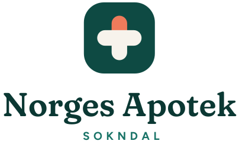

Grafisk profil · utkast
November 2026
Logo

StåendeIdé: Apotekkorset er bygget av to kapsler. Den korallfargede toppen gir varme og gjør merket lett å kjenne igjen – også helt ned i favicon-størrelse. Navnet «Norges Apotek» står fritt, slik at «Sokndal» kan byttes ut hvis det kommer flere apotek senere.
Farger
Fjord
#0E4A43Fjord mørk
#0B3833Fjord lys
#2A8C7DMynte
#8FD3B8Nype
#EE7B5BKalk
#F7F3ECBlekk
#11211ETypografi
Ditt lokale apotek, midt på Haua.
Figtree – brødtekst, knapper og skjema. Vennlig, åpen og svært lettlest på mobil. Gratis (Open Font License).
Vi hjelper deg med resepter, vaksiner og gode råd – med kort vei, kjente fjes og god tid til hver kunde.
Grafiske elementer
Mønster laget av høydekurver – et nikk til det kuperte landskapet rundt Sokndal.
Lagvise åser, sol og hvite trehus. Brukes på Facebook, postkort og i trykk.
Varm, lokal og trygg. Vi skriver «du», bruker korte setninger og sier tydelig hva kunden skal gjøre.
«Takk for at du handler lokalt.»